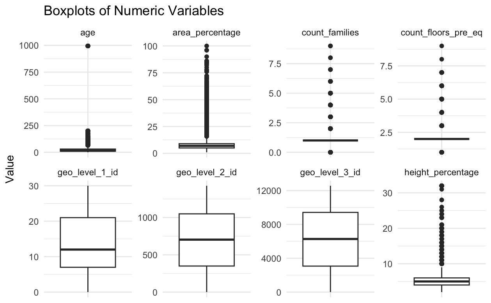
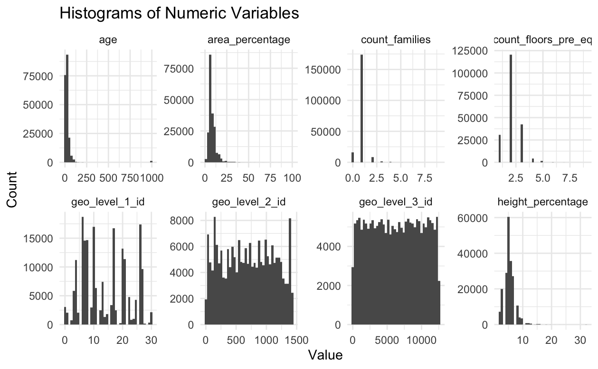
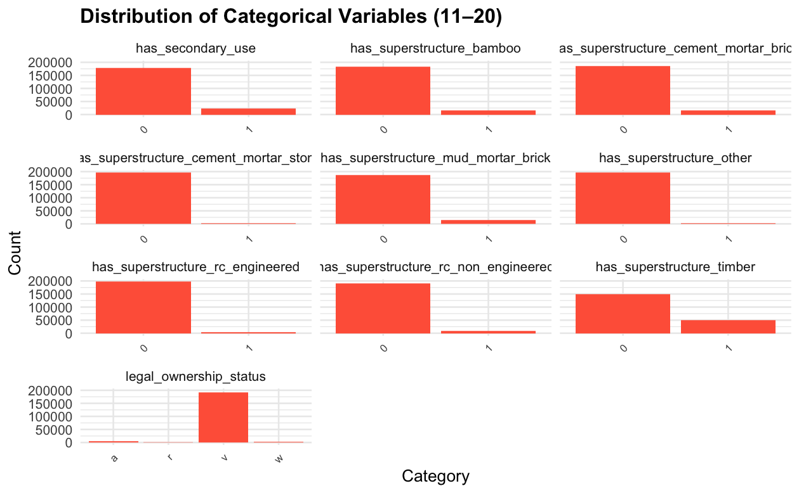
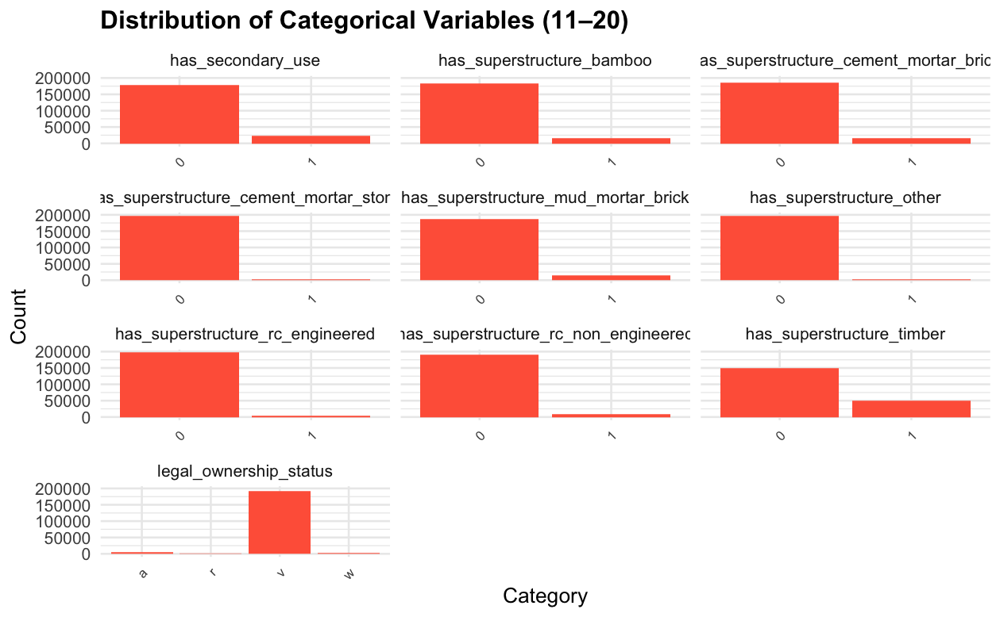
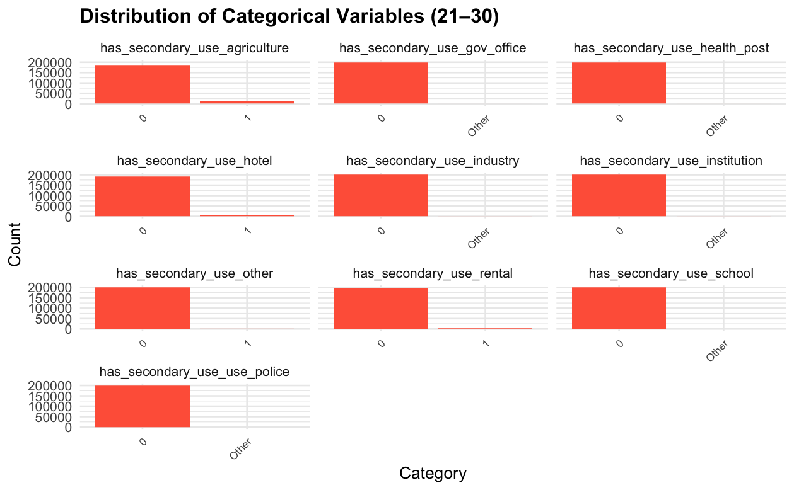
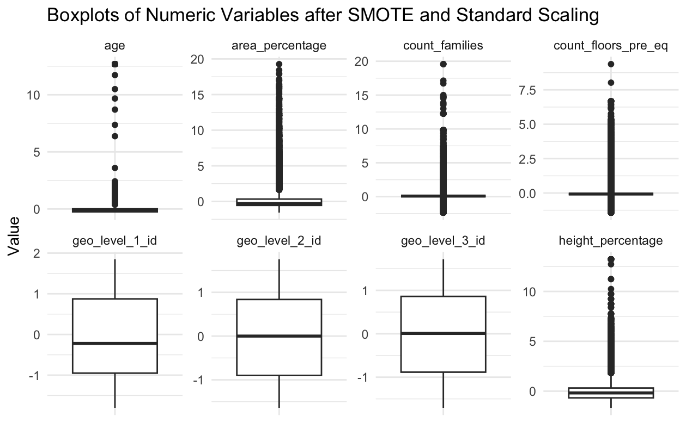
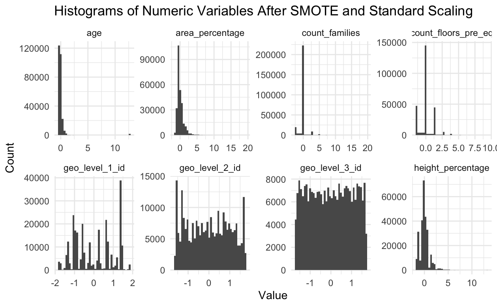

Write-up
Authors: Tianle Chen, Sicheng Zhang, Zixuan Lin
Introduction
The April 2015 Nepal earthquake killed almost 9,000 people and was one of the worst natural disasters to strike Nepal in a century, causing widespread destruction of buildings and mass homelessness. Today’s data represent one of the largest post-disaster datasets ever collected, being made available by Kathmandu Living Labs and the Central Bureau of Statistics.
The goal of the project is to predict damage_grade, an ordinal variable which corresponds to the level of damage sustained by each building in the earthquake. 1 represents “low” damage, 2 represents moderate damage, and 3 represents severe damage.
There are numerous varables included in the dataset, below are comprehensive lists of the features and their distributions:
Numeric Variables:: geo_level_1_id, geo_level_2_id, geo_level_3_id, count_floors_pre_eq, age, area_percentage, height_percentage, count_families.
Numeric Plots:

Categorical Variables: land_surface_condition, foundation_type, roof_type, other_floor_type, plan_configuration, has_superstructure_mud_mortar_stone, has_superstructure_stone_flag, has_superstructure_mud_mortar_brick, has_superstructure_cement_mortar_brick, has_superstructure_timber, has_superstructure_bamboo, has_superstructure_rc_non_engineered, has_superstructure_rc_engineered, has_superstructure_other, legal_ownership_status, has_secondary_use, has_secondary_use_agriculture, has_secondary_use_hotel, has_secondary_use_rental, has_secondary_use_institution, has_secondary_use_school, has_secondary_use_industry, has_secondary_use_health_post, has_secondary_use_gov_office, has_secondary_use_use_police, has_secondary_use_other.
Categorical Plots:
 

Data Cleaning & Feature Engineering
Before proceeding to modeling, it is important for us to keep track of missing values as well as response variable imbalancing issue.
We checked the number of missing values for every column in the data-set and realized that there are no missing values at all, allowing us to proceed to imbalancing detection of response variable (damage_grade).
We checked the current proportions of sample belonging to the three damage grades and observed that there are 9.6% of samples belonging to damage_grade = 1, 56.88% of samples belonging to damage_grade = 2, and 33.52% of samples belonging to damage_grade = 3.
While proportions of samples belonging to damage_grade = 2, 3 are not concerning, there are far less samples in damage_grade = 1 and thus our models might over-fit features from samples in damage_grade = 2 or 3. In order to mitigate such issue, we utilized SMOTE to raise the proportion of samples belong to damage_grade = 1 by making fake identities with possible features of real samples with damage_grade = 1. After SMOTE, the proportions of samples belonging to each damage grade is - “damage_grade = 1” : 32.57%, “damage_grade = 2” : 42.43%, “damage_grade = 3” : 25%.
Finally, to avoid potential modeling bias from large scaled numerical variables, we used standard scaling to keep all numerical variables between 0 and 1. After scaling, the numeral variables have following distributions:
 
Methodology
We tried multiple models to predict the damage_grade of buildings, including generalized linear model with multinomial link function, Random Forest, Categorical Boosting, and XGBoost.
For generalized linear model, we used the multinomial link function to account for the ordinal nature of the response variable. We also selected features based on their distributions to avoid invariant features (e.g. features with merely any level variations, visually identified through histograms). With feature interpretations in mind as well, we selected the following features for the GLM model: age, area_percentage, height_percentage, count_floors_pre_eq, geo_level_1_id, geo_level_2_id, geo_level_3_id, land_surface_condition, roof_type, other_floor_type, and has_superstructure_mud_mortar_stone. All features are directly related to the physical characteristics of the buildings, which are expected to have significant impact on the damage level.
For Random Forest, Categorical Boosting, and XGBoost models, we used all features in the dataset to maximize the predictive power of the models, as all models are based on average performance of n decision trees with different features selected. Though we lose interpretability of the features in these models, we are able to achieve higher accuracy in prediction.
Results
We are first showing results of the multinomial link GLM. It has an accuracy of 56.1%, which is only 6% higher than random guessing.

Next, we are showing results from the random forest model. It has a better overall accurarcy score than GLM.

Lastly, we are showing the results from the greedy-tuned XGBoost model. It has the best accuracy score among all models.

Discussions
The greedy-tuned XGBoost model performance evaluated using overall accuracy on the held-out test data is 82.8%, and the balanced accuracy is 85.8%, which are both high and extremely satisfactory. The ROC curves of this model also shows excellent class separability, and we can see that AUC for damage grade 1 is 0.993, 0.908 for grade 2, and 0.912 grade 3, with a macro-AUC of 0.937.
We also observed some misclassifications, and the model mostly confuses between closeby classes. However, the minor misclassification is acceptable especially considering the complexity of real-world situations and likelihood of overfitting. In conclusion, the fitted model discriminates very well overall, as we can see from the sensitivity, specificity, etc. of every classes, showing that the model have the great potential to be practically used for real-world damagegrade prediction.
Also, it would be worthy to point out that we also tried some other methods including but not limiting to GLM, Random Forest, CatBoost, etc. The basic random forest method also yield to a very strong accuracy of around 80%, and so for interpretability purposes one could also use random forest to draw geological conclusions.